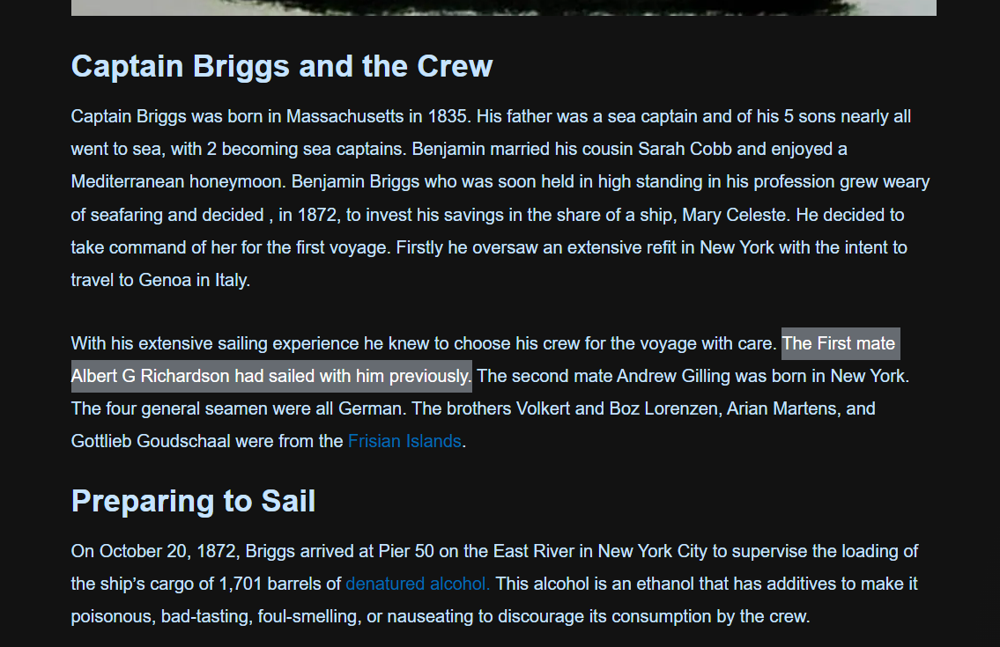
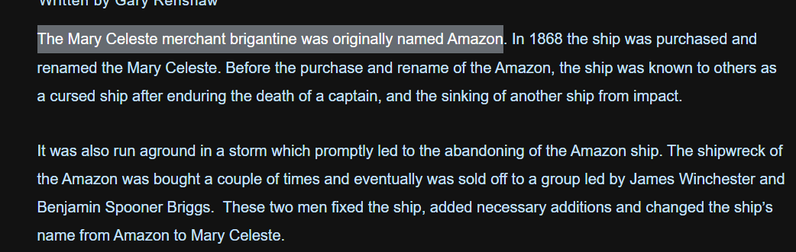

Ocean Enigma
Description
In an old library, a strange picture grabs attention. Its faded lines suggest forgotten stories, sparking curiosity. With determination, explorers begin a search for hidden truths, chasing answers hidden in the mysterious image. Can you help unravel these mysteries?
1)Who is the individual from the crew who has previously sailed with the captain of the ship? 2)What was the name of the Captain's close friend from the crew that found the abandoned ship? 3)In the logbook, the captain noted the sighting of land, describing it as an island. What is the name of this enigmatic island? 4)What was the original name of the ship shown in the image?
Note: If the answer has space within the text replace them with an underscore example: If the answer is Leonardo Vinci, the format for the answer in the flag is Leonardo_Vinci
Author: m1m1
Solution
you can refer to the below link where you can get the answers https://www.modelerscentral.com/maritime-history/story-of-the-mary-celeste/
1) Albert_G_Richardson 
2) David_Morehouse

3) Santa_Maria

4) Amazon 
Flag: shaktictf{Albert_G_Richardson:David_Morehouse:Santa_Maria:Amazon}